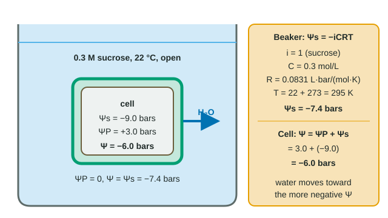

Putting a number on "which way will water move?"
Water moves by osmosis from where its water potential (Ψ) is higher to where it is lower. Water potential has two parts: solute potential (Ψs), which dissolved particles make negative, and pressure potential (ΨP), which a cell wall pushing back on a swollen cell makes positive. The formula sheet gives you both equations:
- Ψ = ΨP + Ψs
- Ψs = −iCRT
where i is the ionization constant, C the molar concentration (mol/L), R the pressure constant, 0.0831 L·bar/(mol·K), and T the temperature in kelvin (°C + 273). The answer comes out in bars.
Worked example: a sucrose solution
Problem: find the water potential of 0.30 mol/L sucrose in an open beaker at 22 °C.
- i: sucrose does not break apart in water, so i = 1.
- C: 0.30 mol/L.
- T: 22 + 273 = 295 K.
- Ψs = −iCRT = −(1)(0.30 mol/L)(0.0831 L·bar/(mol·K))(295 K) = −7.35 bars.
- ΨP: an open beaker adds no pressure, so ΨP = 0.
- Ψ = ΨP + Ψs = 0 + (−7.35) = −7.35 bars, or −0.735 MPa (10 bars = 1 MPa).
Check the units: mol/L × L·bar/(mol·K) × K leaves bars. If your answer is positive, you dropped the minus sign; if it is near −0.5 bars, you probably used °C instead of kelvin.
The ionization constant: count the particles
| Solute | Particles per unit | i | Ψs = −iCRT |
|---|---|---|---|
| Sucrose | 1 (does not ionize) | 1 | −(1)(0.1)(0.0831)(298) = −2.48 bars |
| NaCl | 2 (Na⁺, Cl⁻) | 2 | −4.95 bars |
| CaCl₂ | 3 (Ca²⁺, Cl⁻, Cl⁻) | 3 | −7.43 bars |
Solute potential depends on how many particles are dissolved, not on how heavy or how charged they are. So equal molarity does not mean equal water potential. A bag that lets water but not solutes through, filled with 0.1 M sucrose and set in 0.1 M NaCl, loses water: the salt solution has twice the particles and the lower Ψ. And 0.2 M sucrose has the same Ψ as 0.1 M NaCl, because i × C is 0.2 for both. (Real salts ionize slightly less than completely, so the exam's i = 2 for NaCl is a convenient approximation.)
Adding pressure potential: plant cells

A plant cell has Ψs = −9.0 bars and, because its wall pushes back, ΨP = +3.0 bars. Its water potential is 3.0 + (−9.0) = −6.0 bars. Put it in 0.3 M sucrose at 22 °C (Ψ ≈ −7.4 bars) and water leaves the cell, moving from −6.0 toward −7.4 bars (see the diagram). As water leaves, the cell pushes less on its wall, so ΨP falls, until the cell's Ψ matches the solution's. In pure water (Ψ = 0) the same cell would take in water, and its ΨP would rise as it became more turgid.
Reading a potato-core experiment
Students soak potato cores in sucrose solutions of different molarities and record the percent change in mass. Percent change, not grams, because cores start at different masses. In one class the cores gained 5% in 0.2 M and lost 5% in 0.4 M, so the line crosses zero at about 0.30 M. At that concentration there is no net water movement: the solution's water potential equals the cells'. So the potato cells' Ψ is about the Ψ of 0.30 M sucrose at 22 °C, −7.35 bars.
In more concentrated solutions (0.8 M has Ψ ≈ −19.6 bars) water leaves the cells and the cores lose mass; in pure water (Ψ = 0) they gain it.
Checklist before you submit
- Is T in kelvin (°C + 273)?
- Did you use the right i (1 for sucrose or glucose, about 2 for NaCl, about 3 for CaCl₂)?
- Is Ψs negative?
- Did you add ΨP (0 in an open container)?
- Does water move toward the more negative Ψ in your answer?